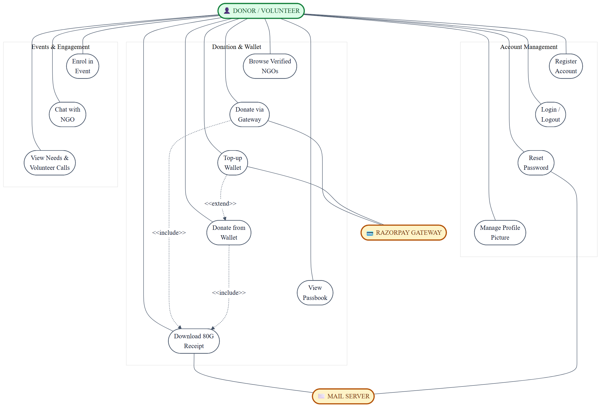
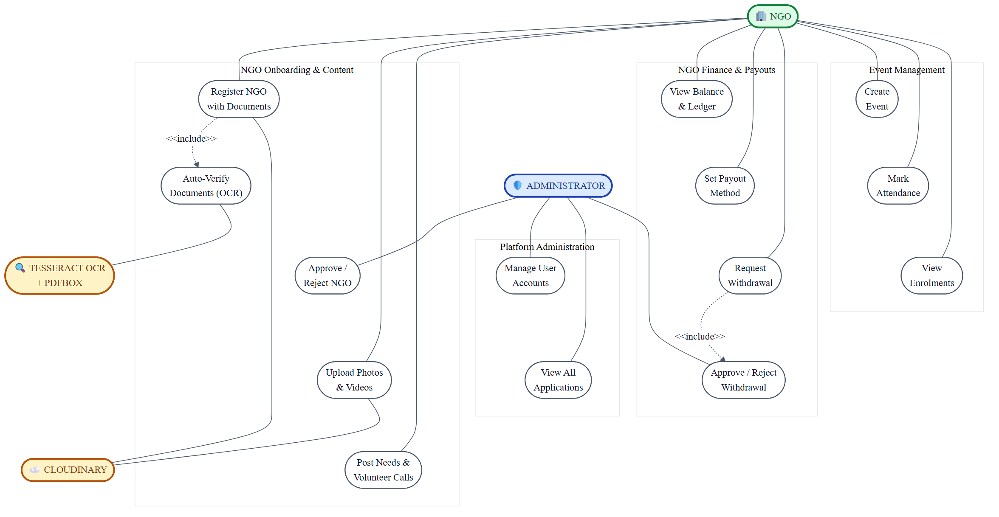
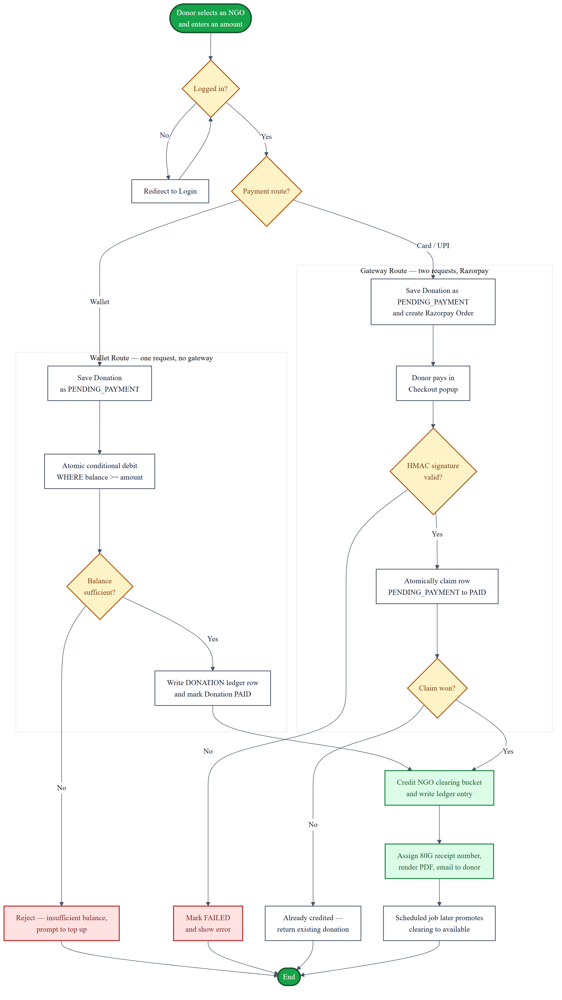
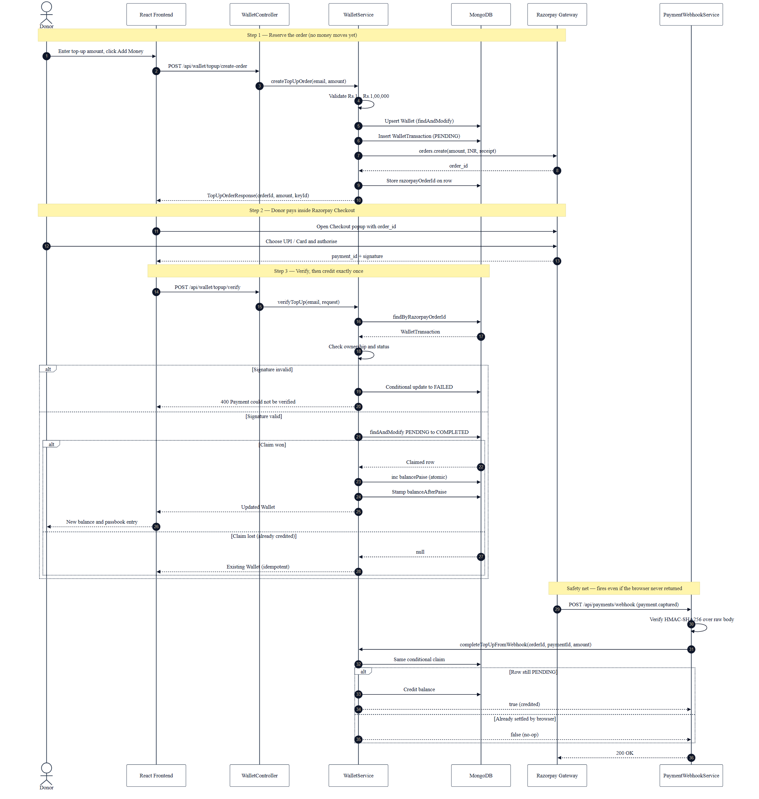
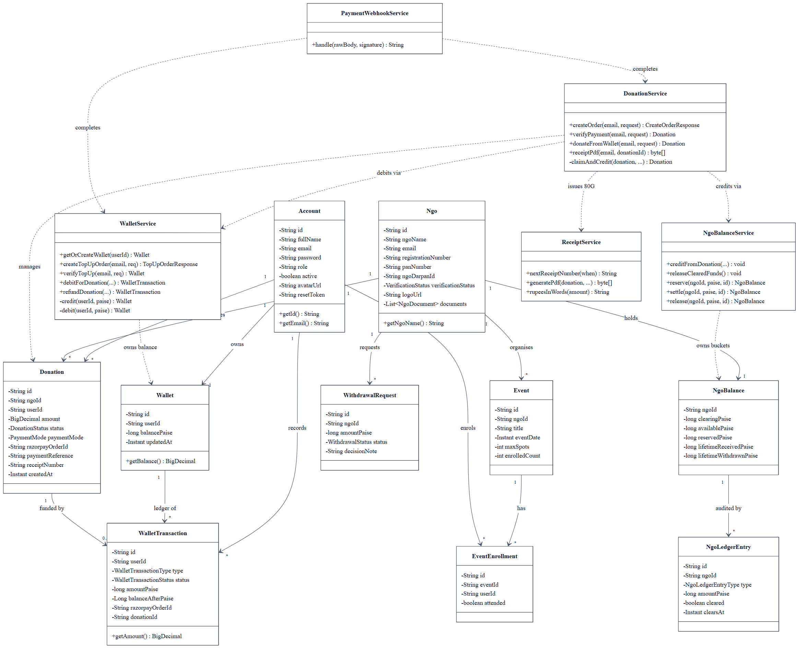
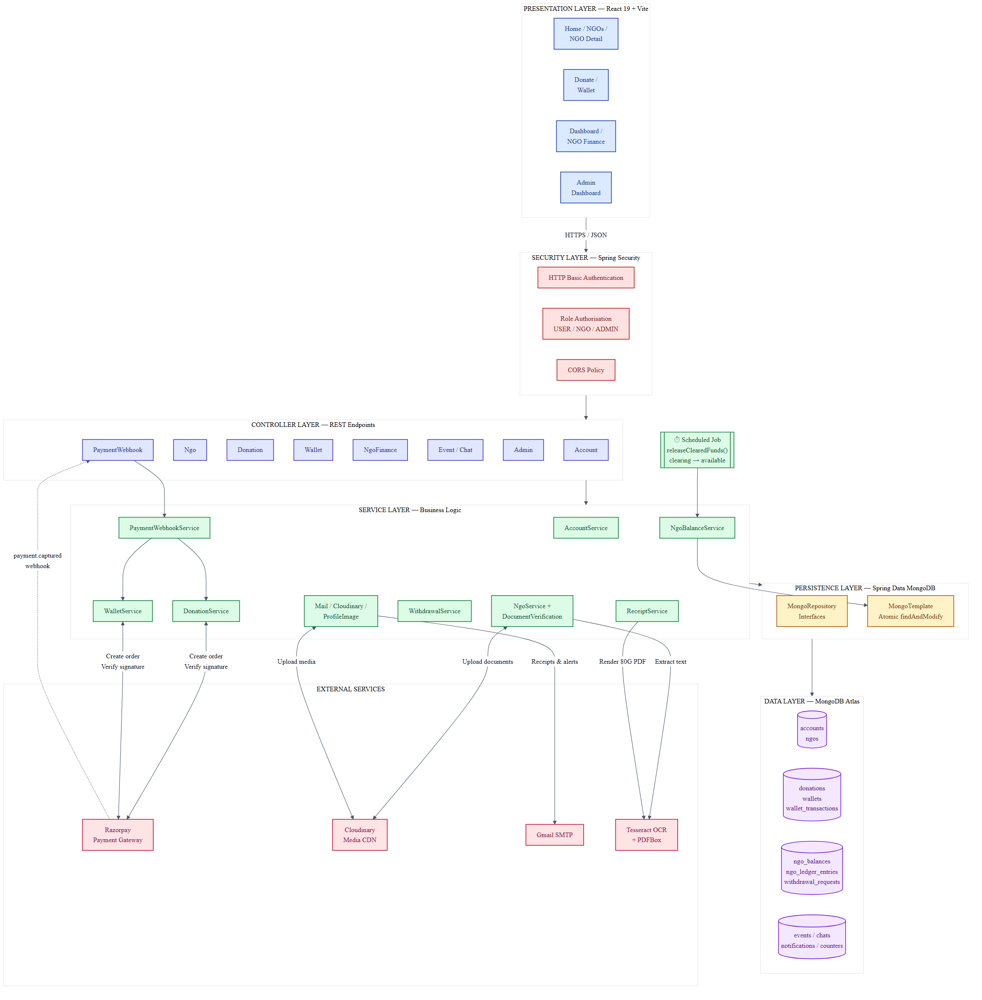

Local preview · Not yet embedded
Six figures prepared for Section 5, System Design.
These are the exact images that will go into the Word report. Click “View full size” on any figure to inspect the detail. Tell me what to change, or say go ahead and I will embed them with numbered captions.
Everything a donor or volunteer can do, in three groups: account management, the donation and wallet flow, and event engagement. Dashed arrows are UML relationships — both donation routes include receipt generation, and a wallet top-up extends into paying from balance.

Split from Fig 5.1 so both stay readable. Covers NGO onboarding with automated document verification, the finance and payout cycle, event management, and the administrator’s approval powers over both NGO registrations and withdrawal requests.

The complete donation flow with both funding routes side by side. The wallet route finishes in a single request; the gateway route takes two and passes through signature verification. Both converge on crediting the NGO and issuing the 80G receipt, and both guard against double-crediting with an atomic claim.

The interaction diagram the template asks for, traced through the most involved flow in the system. It shows all three steps of a top-up, the two alternative outcomes at signature verification, and the webhook safety net that credits the wallet even when the browser never comes back.

Domain entities with their attributes and multiplicities, plus the five services that own the money paths. Solid lines are data relationships; dashed lines show which service manages which entity — the single-owner rule that keeps all balance arithmetic in one place.

The seven-layer architecture, from the React frontend through security, controllers, services and persistence down to MongoDB Atlas, with external services alongside. The dotted line from Razorpay back to the webhook controller is the inbound path that makes payment recovery possible.
